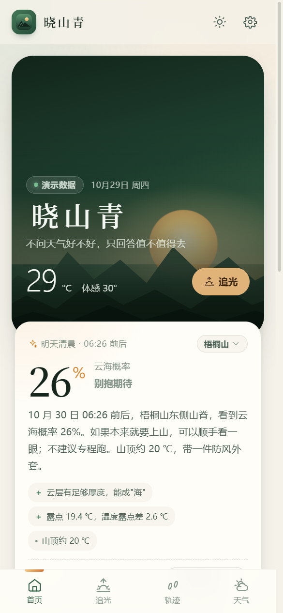
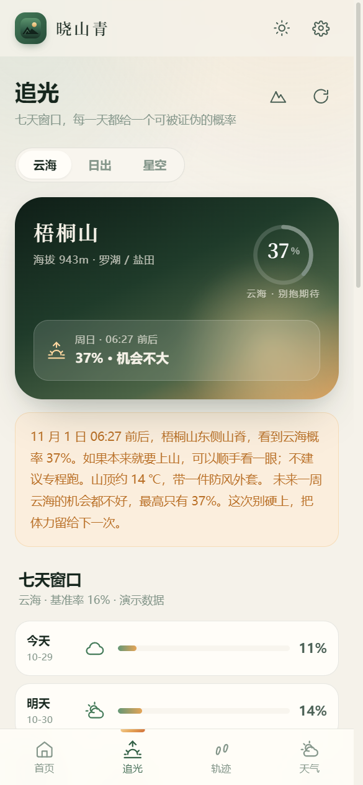
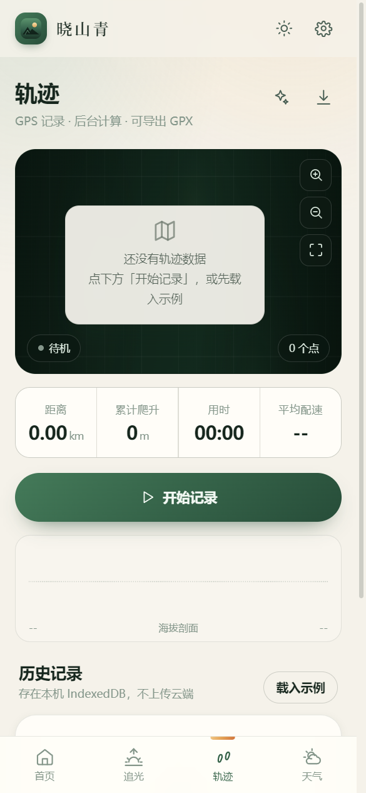

追光
七天窗口，一个概率
云海、日出、星空三种模式，各自一套权重。给出最佳日期、精确到分钟的时刻窗口、该去哪个坡向、山顶多少度、穿什么。

首页只做一件事：告诉你今天值不值得上山。
核心主张
明早 6:12 · 梧桐山东麓 · 云海概率
天气 App 告诉你「云量 30%」。这个数字对登山的人没有意义——你要知道的是云在不在你脚下。
所以晓山青只输出一个能被证伪的数字：明早 6:12，梧桐山东麓，云海概率 72%。下面永远跟着一行「基准率 16% · 置信度中」，以及每一项证据的加减值。
你可以反驳它。下次上山回来说一句「看到了」或「白跑一趟」，它会把误差记住。样本越多，它越不敢乱说。
做减法之后剩下的
不铺十宫格。把每一次出发真正需要的几件事，做到底。
七天窗口，一个概率
云海、日出、星空三种模式，各自一套权重。给出最佳日期、精确到分钟的时刻窗口、该去哪个坡向、山顶多少度、穿什么。
山上没信号也照常记
距离、爬升、配速全在本地算，地图自己画，不依赖任何在线瓦片。底图可在高德 / 卫星 / OSM / 无之间实时切换，断网自动回退地形背景。
一次上山，一张能发的图
时间、坐标、海拔、当时的天气，加一句写实的叙事，渲染成 1080×1350 的卡片。事前还能生成「预测卡」，回来看命中没有。
实况、预报与预警并排
24 小时与 7 天，气象预警直接并进顶部横幅。现在取 15 分钟实况场，不拿整点预报冒充；取数失败就如实显示失败。
界面
深森林绿与晨曦琥珀，深色浅色都做了。下面是真机渲染。




下载
装完就能看真实预报：不用注册、不用填 Key、不用登录。Windows 安装包、安卓 APK、网页版同源。
标准安装向导，可选目录，自动创建桌面与开始菜单快捷方式。适合长期使用。
下载安装包XiaoShanQing-2.6.6-Setup-x64.exe · Windows 10/11 · 64 位 · 78 MB
单文件，双击即用，不写注册表。丢进 U 盘换台电脑也能跑。
下载绿色版XiaoShanQing-2.6.6-Portable-x64.exe · 删掉文件即卸载干净
debug 签名，安装前在手机设置里允许「安装未知来源应用」即可。数据同样只存本机。
下载 Android APKXiaoShanQing-2.6.6-android-debug.apk · 手机专用，电脑不能直接运行
不装任何东西，电脑和手机浏览器都能开。手机上「添加到主屏幕」，用起来和 App 一样，断网也能开。
立即打开网页版xxx1-sg.github.io/Viridiore/app/ · 数据存在你自己的浏览器里
安装包托管在 GitHub Release，支持断点续传。未做代码签名，首次运行 SmartScreen 可能拦一次，点「更多信息 → 仍要运行」即可。
已知局限
一个预测工具最该做的，是交代边界。下面几条写在 README 里，也写在设置页里。
925 / 850 hPa 温度取自数值模式同化场，山区实际层结会偏差几度：逆温有无判得住，精确到米判不住。
预测台账每天记一份、用 ERA5 再分析对账；真实样本到位前，校准曲线只显示「样本积累中」。
没有做坡向与山谷的精细建模，所以「哪个坡向」给的是经验建议，不是计算结论。
没有真实短信网关与卫星通道的求救按钮，比没有更危险——相关功能已下架。